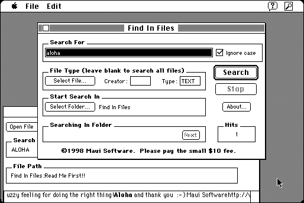

Download
FindInFiles.zip (393K) Find In Files 2.1 repackaged into a zipped hfs disk image and checksum file. The disk image can be mounted with Mini vMac.
FindInFiles.sit (352K) Find In Files 2.1 in the original format.
copyright: Maui Software (now Modesitt Software)
mod date: Feb 20, 1998
license: shareware
last known url
(gone)
Searches “for text in multiple files.” Avoid the “About” command, because mousing over any of the links will crash (requires color quickdraw). Otherwise it seems to work fine. Requires System 7.1 or later.

If you find these downloads useful, please consider helping the Gryphel Project, which hosts them.
Here are the md5 checksums for the downloads, signed with Gryphel Key 5:
--------- GRY SIGNED TEXT --------- 8a7b579285d0640d69883bfe0c7ecb96 FindInFiles.zip 93d8cfddf7e52fbb6c148eb559850506 FindInFiles.sit ------- BEGIN GRY SIGNATURE ------- Gry/4Xa8CFcUzxdN/NoCQ4falIMwrZZwE4/So/5w/SAQcHSguGOwxu+pGVfqmg92 xEVk8gDCFiXpNKngTr2PlIeCkiReLW5HVQz+dTbBrk6VEqNRb/796jsFKUdX+Uw9 vxV98APDRcnfgKjk9NqjKG+kNxMaO3rxBJ+doNR6v8YQ7bXSR7gvy5OBYyRpUund -------- END GRY SIGNATURE --------